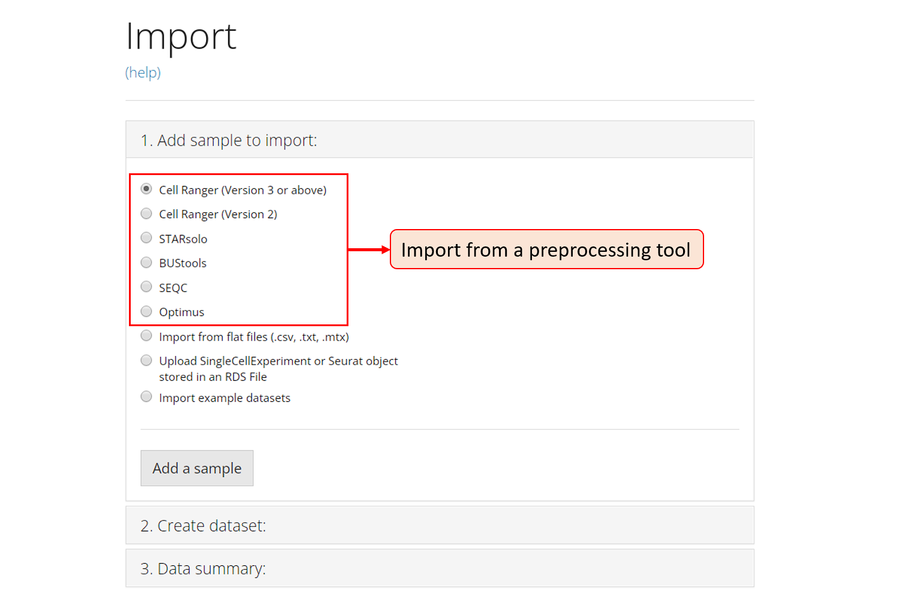
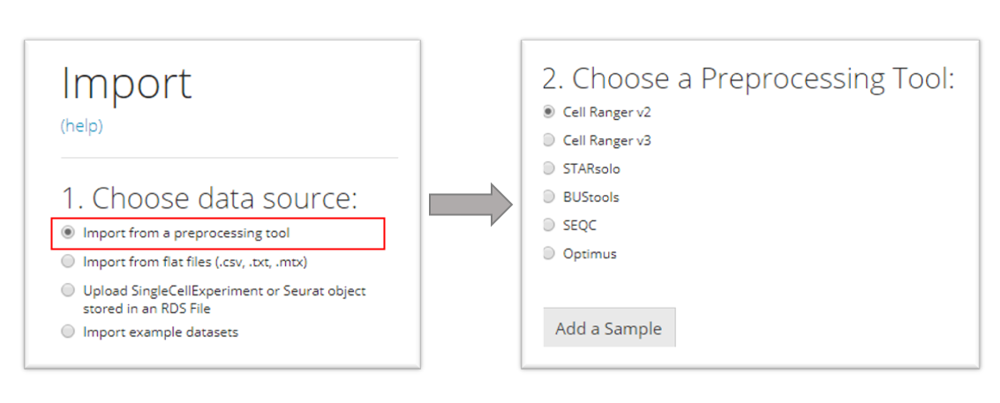
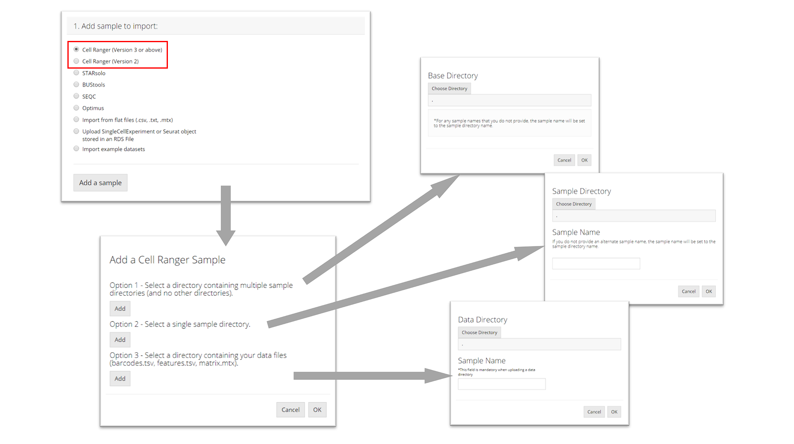
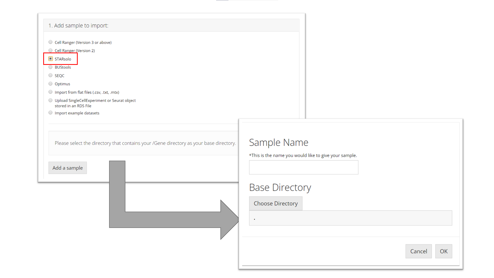
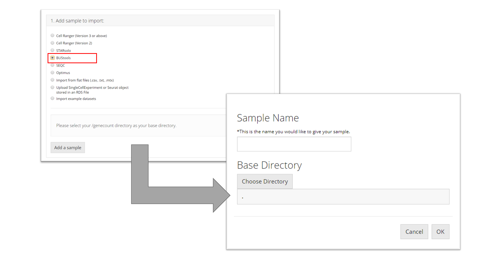
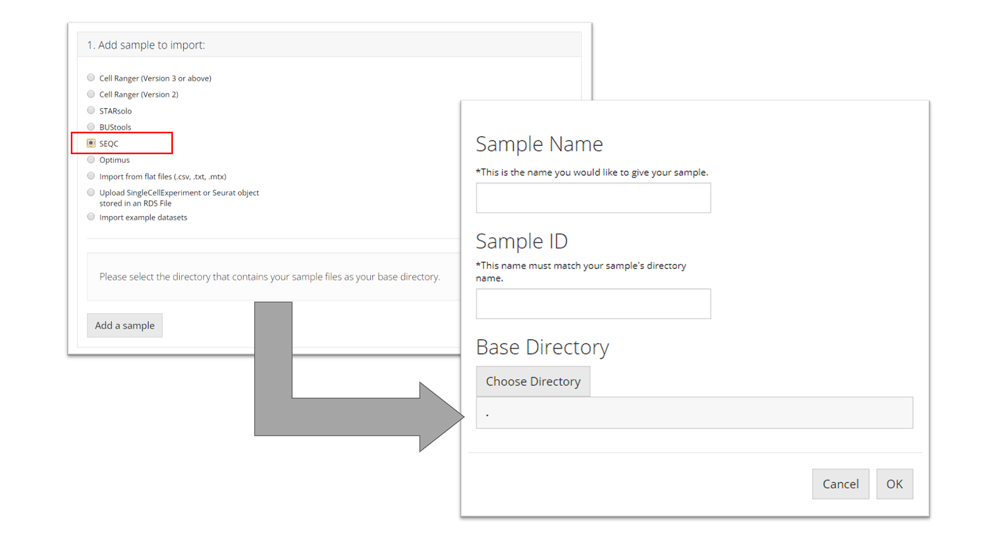
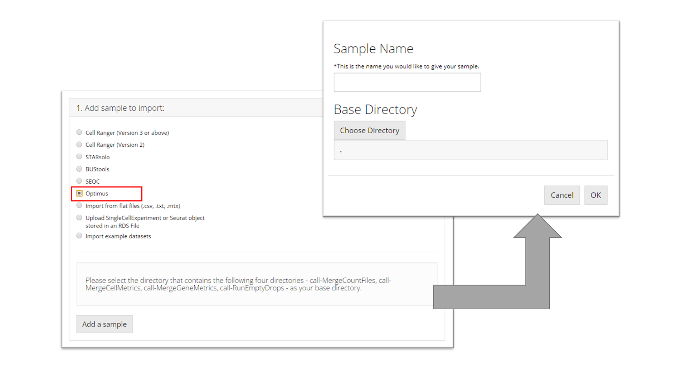
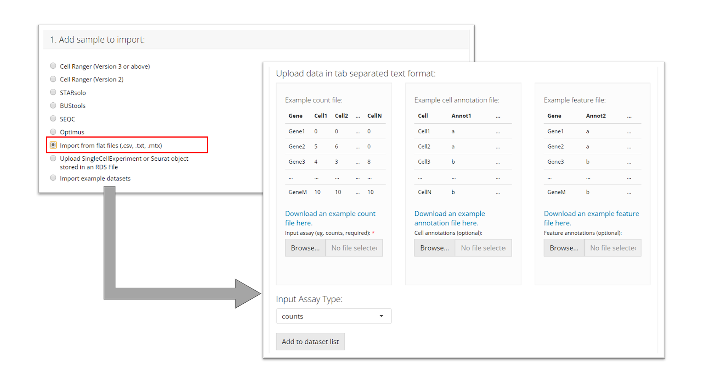
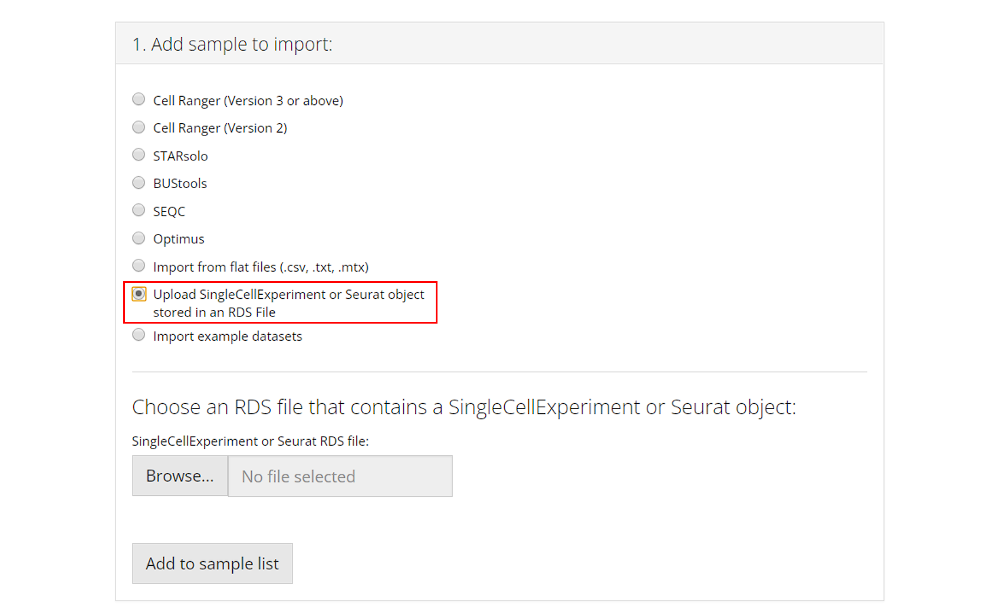
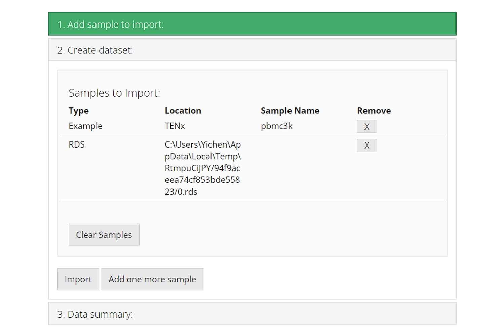

Introduction
Single Cell ToolKit (singleCellTK, SCTK) enables importing data from the following pre-processing tools
In all cases, SCTK retains the standard output directory structure from the upstream tools.
Meanwhile, SCTK also supports importing raw count matrix, with metadata, stored in the following format
- Text files (.csv/.tsv)
- SingleCellExperiment object saved in RDS file
- AnnData object saved in hdf5 file
A chart at the bottom of this documentation summarizes the expected directory structure of the input data, for each type of data source.
To view detailed instructions on how to import data, please select, from the tabs below, “Interactive Analysis” for importing data into the Shiny application, or “Console Analysis” for importing into R environment via R console.
Workflow Guide
This page is the landing page of the SCTK UI application. Here SCTK allows users to import multiple datasets at once, and the datasets can be in various forms, as listed above. SCTK also provides online example datasets.
The UI contains mainly three sections for importing and another section for data summary. Through the first and the second sections, users can choose the type of a single data source and specify the location of the data from this single source, respectively. A table in the third section summarizes files and samples that are specified from all sources. Finally, all data can be imported by clicking on the import button right below this table.

Importing Single-Cell Datasets

For a single source of data, users need to choose one option from the radio buttons listed in the screenshot. The next step will depend on the option chosen.
Import from a preprocessing tool

SCTK supports importing data from the following pre-processing tools in our UI workflow:
- CellRanger (versions 2 and 3)
- STARSolo
- BUStools
- Seqc
- Optimus
Choose the specific preprocessing tool that matches your dataset, and then press “Add a Sample.” A corresponding dialog modal will pop out with description that instructs you to select the directory that stores your data.
Cell Ranger
The import procedure for Cell Ranger versions 2 and 3 are the same. To import a Cell Ranger sample, the user must select how they would like to import the sample: select a base directory that holds multiple sample directories, select a single sample directory, or select a directory holding the data files for a sample. Depending on this selection, the user must then provide the apprpriate directory paths and sample names and then click “OK.”

STARsolo
To import a STARsolo sample, the user must select the parent directory of the "Gene/" directory for the sample they want to import, name the sample, and click “OK.”

BUStools
To import a BUStools sample, the user must point to the "genecount/" directory for the sample they want to import, name the sample, and click “OK.”

SEQC
To import a SEQC sample, the user must point to the directory that contains the barcodes, gene, and matrix files for the sample they want to import and name the sample. This tool additionally needs the user to specify a “Sample ID” which is what the name of the sample is as it appears in the names of its data files (e.g. for a file called "pbmc_1k_sparse_counts_barcodes.csv" the sample ID is "pbmc_1k"). Then the user must click “OK.”

Optimus
To import an Optimus sample, the user must select the directory that contains the following four directories for the sample they want to import: "call-MergeCountFiles", "call-MergeCellMetrics", "call-MergeGeneMetrics", "call-RunEmptyDrops". Then the user must prove a sample name and click “OK.”

Flat files (.cvs, .tsv)
To import tab-separated data, the user must provide a counts file (.csv or .tsv) and specify what type of input assay it is. The user can optionally also provide cell annotation and feature files (also .csv or .tsv). The user must then click “Add to Sample List” to add it to the table of samples.
After choosing a single file for uploading, user must wait until the progress bar runs to the right end and says “Upload complete.” Sometimes the progress bar runs to the end but it takes some time for the system to finalize reading a large file.

SingleCellExperiment or Seurat Object in an RDS file
RDS is a file format that stores a single object from R environment. To import a single-cell dataset stored in a SingleCellExperiment (SCE) object from an RDS file, the user can simply select which RDS file to import and click “Add to Sample List”.
After choosing a single file for uploading, user must wait until the progress bar runs to the right end and says “Upload complete.” Sometimes the progress bar runs to the end but it takes some time for the system to finalize reading a large file.

Example Datasets
Users can also opt to import and work with published example datasets. To do so, the user must select which dataset they would like to use from the dropdown menu and click “Add to Sample List”. For more information about the chosen dataset, users can click on the hyperlink of the title and open the reference website in a browser.

Complete Upload
After successfully choosing each source of dataset, it will be inserted to a new line of the table at the buttom of this UI page, in “3. Import” section. This is a wait-list for all the samples of interests. To finally import all datasets of interests, users must click on “Import” button.
Before importing, users can click on the “[X]” button on the right to remove the selection of the corresponding single dataset, or click on “Clear Samples” to reset all selections. This only clears this wait-list for importing, but will not work on any dataset already imported.
Note that it is normal that in the “Location” field, some paths might happen to point to a temporary cache.

SCTK provides wrapper functions that import data from the output of all pre-processing tools mentioned at the top. A list of these import functions will be followed. All the import functions return the imported counts matrix as a SingleCellExperiment object assay, with associated information in respective colData, rowData, reducedDim, and metadata fields.
Function Reference for pre-processing tools
| Upstream Tool | Function |
|---|---|
| Alevin | importAlevin() |
| BUStools | importBUStools() |
| CellRanger |
importCellRanger(), importCellRangerV2(), importCellRangerV3(), importCellRangerV2Sample(), importCellRangerV3Sample()
|
| DropEst | importDropEst() |
| Optimus | importOptimus() |
| SEQC | importSEQC() |
| STARsolo | importSTARsolo() |
Click on the link of the function names to read the detailed manual of the them.
Function reference for importing Flat files (.csv, .tsv)
| File Format | Function |
|---|---|
| .mtx, .txt, .csv, .tab, or .tsv | importFromFiles() |
Click on the link of the function names to read the detailed manual of the them.
Function reference for importing an example
Run the following command to import the “PBMC-3K” dataset provided by TEN-X.
library(singleCellTK)
sce <- importExampleData("pbmc3k")Click on the link of the function names to read the detailed manual of the it.
Importing from saved objects (SingleCellExperiment, Seurat, AnnData)
Run the following command to import a SingleCellExperiment object saved in RDS file
sce <- readRDS("path/to/filename.rds")Run the following commands to import a Seurat object saved in RDS file, and convert it to SingleCellExperiment object to be compatible with SCTK’s workflow.
seuratObj <- readRDS("path/to/filename.rds")
sce <- convertSeuratToSCE(seuratObj)Run the following commands to import an AnnData object saved in H5AD file, and convert it to SingleCellExperiment object to be compatible with SCTK’s workflow.
sce <- importAnnData("path/to/filename.h5ad")Click on the link of the function names to read the detailed manual of the them.
When multiple datasets are imported and users would like to perform analysis of all the samples at the same time, users can use the following utility function to combine them
sce.list <- list(sampleName1 = sce1, sampleName2 = sce2)
sce.combined <- combineSCE(sce.list, by.r = NULL, by.c = NULL, combined = TRUE)